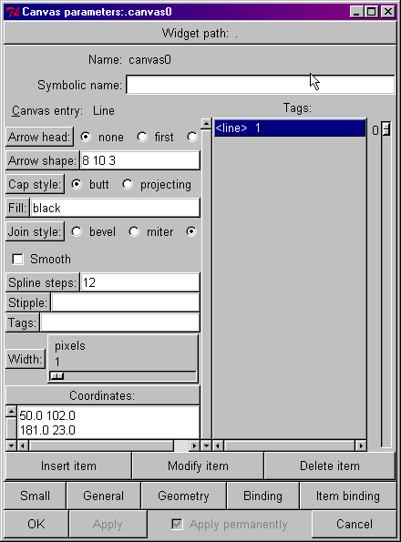
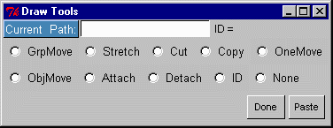

XF and the Canvas Widget
XF provides a configuration window to add, modify and delete
items on a TCL/TK canvas. A sample screen shot of the window
follows.

The configuration options on this window change
for each type of canvas object. This configuration window is used
primarily for creation and initial configuration of canvas
objects. Several other canvas drawing capabilities have been
added with the Draw Tools pop-up described next.
Using Draw Tools
The canvas drawing capabilities of XF have been extended. A
Draw Tools toolbar may be displayed by pressing the new icon on the icon menu bar.
This will display the Draw Tools
window shown below.

The tools simplify the most common tasks associated with
shaping or arranging objects on a canvas. Additionally, canvas
objects may now be moved in permanently or temporarily defined
groups.
Before using the tools, the current working canvas must be
selected. A canvas must be selected at least once before the draw
tools can be used on it. This can be done in two ways. The canvas
widget path can be typed directly into the Current Path
entry box. This entry box will only accept the name of existing
canvas widgets. If the canvas does not yet exist, the original
entry box contents will be restored. The canvas path may also be
selected using mouse button one. Press and hold the mouse button
over the Current Path label. The mouse cursor will have a
question mark shape while the mouse button is held down. Move the
mouse pointer over the desired canvas then release the button.
This will automatically insert the name of the desired canvas
into the entry box.
The following draw modes are active when their respective
radio buttons are selected. A description of the draw modes
follows.
- GrpMove - In this mode, a
group of canvas objects may be highlighted using mouse
button one and then moved as a group. Mouse button one is
first used to enclose the group of object by stretching a
yellow border around them. The border is defined by
pressing and holding mouse button one while moving the
mouse to enclose the objects. Releasing the mouse button
causes the yellow border to snap back to surround only
those objects completely enclosed by the border. The
enclosed objects may then be moved by pressing and
holding mouse button one, moving the objects to the
desired location then releasing the button.
- Stretch - Any vertex of any
object may be moved in this draw mode. The object
dynamically reshapes as its vertex is moved.
- Cut - In this mode, a group
of canvas objects may be highlighted using mouse button
one and then deleted. The group is selected in the same
manner as the GrpMove
option. Once the mouse button is released the objects are
deleted. The objects may be restored by using the Paste
button.
- Copy - In this mode, a group
of canvas objects may be highlighted using mouse button
one and then copied as a group. The group is selected in
the same manner as the GrpMove
option. A copy of the objects are created and placed over
the originals. The new objects will remain highlighted by
a yellow border. The new objects may then be moved by
pressing and holding mouse button one, moving the objects
to the desired location then releasing the button.
- OneMove - This mode is used
to move a single object at a time. Simply select the
object with mouse button one, hold down the button and
move the object to the desired location then release the
mouse button.
- ObjMove - ObjMove mode
allows the user to move an arbitrary set of objects as a
group. Canvas objects are grouped together using the Attach mode. Press and hold mouse
button one over a member of the object group, move the
mouse to the desired location then release the mouse
button. Objects in the group maintain their spatial
relationship to each other.
- Attach - In Attach mode,
mouse button one can be used to attach a canvas object to
an arbitrary object grouping. The objects do not have to
be exclusively bounded by a common rectangular region.
They may have any spacial relationship to each other.
After several canvas objects are attached together, they
can be selected to move as a unit when ObjMove mode is active. When
Attach mode is active, objects will be attached to
either an existing complex object group or a new complex
grouping will be created. This behavior is dependent of
the first object selected after switching to Attach mode.
If the first object selected is already part of a complex
object, any selected object will be added to this same
complex object. If the first object doesn't yet belong to
a complex object group, any selected object will be added
to a new complex grouping.
- Detach - In Detach mode,
mouse button one can be used to detach a canvas object
from a more complex object grouping. Simply select the
canvas object with mouse button one while in this mode.
The selected object will be removed from any complex
object grouping.
- ID - This mode retrieves the
item ID number for a canvas object. Pressing mouse button
one over an object while in ID mode displays the ID
number in the upper right corner of the Draw Tools window. When the
canvas configuration window is open, this action will
also select the canvas object in the configuration
window.
- None - Select this item to
turn off all draw modes.
Press the Paste button to restore the last group of
objects that was Cut.
Press the Done button to dismiss the Draw Tools window.
This page last updated November 21, 1998 by Dennis R.
LaBelle